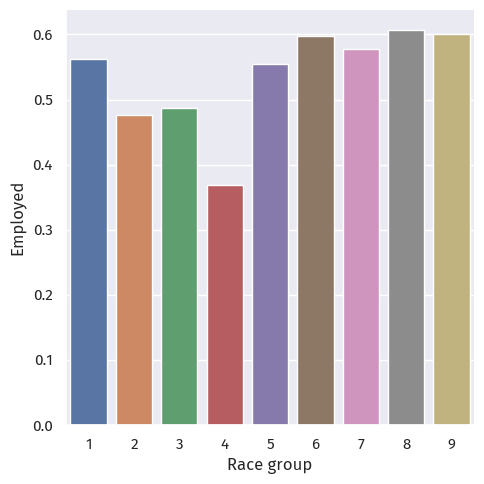
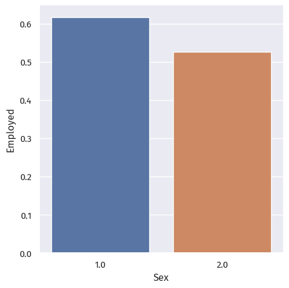
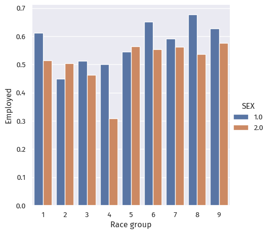
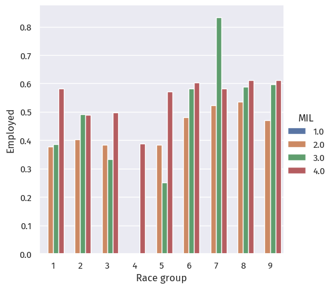
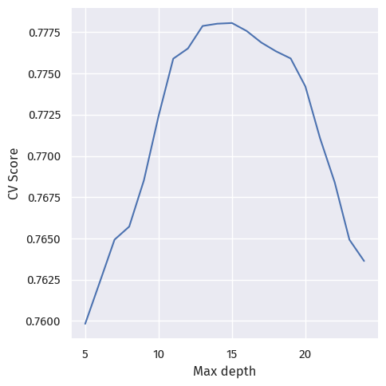
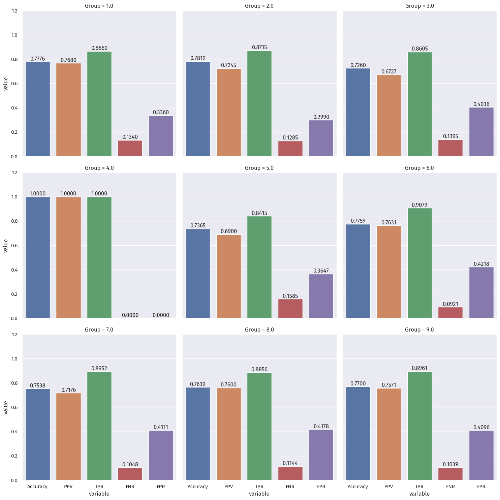

from matplotlib import font_manager
import matplotlib.pyplot as plt
import seaborn as sns
import numpy as np
import pandas as pd
from os.path import isfile
import warnings
warnings.filterwarnings('ignore')
font_manager.fontManager.addfont("C:\Windows\Fonts\FiraSans-Regular.ttf")
sns.set_theme()
sns.set(font="Fira Sans")Image credits: Christina Animashaun/Vox
Instructions can be found at Auditing Allocative Bias.
Problem statement
We grab datasets derived from the US Census, courtesy of the folktables package.
We can use BasicProblem() to frame a problem for our investigation.
In this case, we attempt to predict employment status on the basis of demographics, excluding race, in the US state of California.
Since we are looking at employment, it would make sense to only look at people between the ages of 16 and 90.
Then, we audit for racial bias in our predictions.
(The code chunk below is derived from the blog post instructions.)
# Data
from folktables import ACSDataSource, BasicProblem
STATE = "CA"
def age_filter(data):
"""Age filter.
"""
df = data
df = df[df['AGEP'] > 16]
df = df[df['AGEP'] < 90]
return df
data_source = ACSDataSource(
survey_year='2018',
horizon='1-Year',
survey='person'
)
file_exists = isfile("./data/2018/1-Year/psam_p06.csv")
acs_data = data_source.get_data(states=[STATE], download=not file_exists)
possible_features = [
'AGEP', 'SCHL', 'MAR', 'RELP', 'DIS', 'ESP', 'CIT', 'MIG',
'MIL', 'ANC', 'NATIVITY', 'DEAR', 'DEYE', 'DREM', 'SEX', 'RAC1P', 'ESR'
]
features_to_use = [
f for f in possible_features
if f not in ["ESR", "RAC1P"]
]
EmploymentProblem = BasicProblem(
features=features_to_use,
target='ESR',
target_transform=lambda x: x == 1,
group='RAC1P',
preprocess=age_filter,
postprocess=lambda x: np.nan_to_num(x, -1),
)
features, label, group = EmploymentProblem.df_to_numpy(acs_data)Then, we perform a train-test split:
from sklearn.model_selection import train_test_split
X_train, X_test, \
y_train, y_test, \
group_train, group_test = train_test_split(
features,
label,
group,
test_size=0.2,
random_state=0
)Data descriptives
We answer some descriptive questions about the data. In order to do this, we convert our training set back into a dataframe:
df = pd.DataFrame(X_train, columns=features_to_use)
df["group"] = group_train
df["label"] = y_train
df.head()| AGEP | SCHL | MAR | RELP | DIS | ESP | CIT | MIG | MIL | ANC | NATIVITY | DEAR | DEYE | DREM | SEX | group | label | |
|---|---|---|---|---|---|---|---|---|---|---|---|---|---|---|---|---|---|
| 0 | 39.0 | 21.0 | 3.0 | 0.0 | 2.0 | 0.0 | 1.0 | 1.0 | 4.0 | 1.0 | 1.0 | 2.0 | 2.0 | 2.0 | 2.0 | 1 | True |
| 1 | 63.0 | 22.0 | 1.0 | 0.0 | 1.0 | 0.0 | 1.0 | 1.0 | 4.0 | 2.0 | 1.0 | 1.0 | 2.0 | 2.0 | 2.0 | 1 | False |
| 2 | 36.0 | 21.0 | 1.0 | 0.0 | 2.0 | 0.0 | 1.0 | 1.0 | 4.0 | 4.0 | 1.0 | 2.0 | 2.0 | 2.0 | 2.0 | 1 | True |
| 3 | 17.0 | 14.0 | 5.0 | 2.0 | 2.0 | 1.0 | 1.0 | 1.0 | 4.0 | 2.0 | 1.0 | 2.0 | 2.0 | 2.0 | 1.0 | 9 | False |
| 4 | 78.0 | 21.0 | 3.0 | 0.0 | 2.0 | 0.0 | 4.0 | 1.0 | 4.0 | 1.0 | 2.0 | 2.0 | 2.0 | 2.0 | 2.0 | 6 | False |
Column definitions (click to expand)
These are the column definitions from Appendix B.2 of the original paper:
- AGEP: age
- SCHL: education, from 1 (none) to 24 (doctorate degree)
- MAR, RELP: marital & relationship status
- DIS, DEAR, DEYE, DREM: disabilities
- ESP: employment status of parents
- CIT: citizenship
- MIG: mobility status
- MIL: military service
- ANC: ancestry
- SEX: 1 for male, 2 for female
- label: employed (
True) or unemployed (False)
The group column encodes race as follows:
- White alone
- Black or African American alone
- American Indian alone
- Alaska Native alone
- American Indian and Alaska Native tribes specified, or American Indian or Alaska Native, not specified and no other races
- Asian alone
- Native Hawaiian and Other Pacific Islander alone
- Some Other Race alone
- Two or More Races
We can use pandas.DataFrame.describe to get some basic descriptive statistics:
df[[df.columns[0]]].describe()| AGEP | |
|---|---|
| count | 242112.000000 |
| mean | 47.426612 |
| std | 18.480978 |
| min | 17.000000 |
| 25% | 32.000000 |
| 50% | 47.000000 |
| 75% | 62.000000 |
| max | 89.000000 |
Since AGEP (age) is quantitiative, describe gives us the age percentiles.
We can see 242,112 people in the dataset, with age ranging from 17 to 89 (as filtered), and averaging at 47.42.
Then, we look at the other columns, which are qualitative:
# https://stackoverflow.com/a/37717675
summary = df.drop(columns="AGEP", axis=1).astype(int).astype(str).describe()
# percentage of mode
summary.loc["percent"] = (summary.loc["freq"] /
summary.loc["count"] * 100).astype(float).round(2)
summary
# I miss R, they have f-strings but for markdown
# I realize I included children, but too late
# so now I have to manually edit every single number
# https://quarto.org/docs/computations/execution-options.html#inline-code| SCHL | MAR | RELP | DIS | ESP | CIT | MIG | MIL | ANC | NATIVITY | DEAR | DEYE | DREM | SEX | group | label | |
|---|---|---|---|---|---|---|---|---|---|---|---|---|---|---|---|---|
| count | 242112 | 242112 | 242112 | 242112 | 242112 | 242112 | 242112 | 242112 | 242112 | 242112 | 242112 | 242112 | 242112 | 242112 | 242112 | 242112 |
| unique | 24 | 5 | 18 | 2 | 9 | 5 | 3 | 4 | 4 | 2 | 2 | 2 | 2 | 2 | 9 | 2 |
| top | 21 | 1 | 0 | 2 | 0 | 1 | 1 | 4 | 1 | 1 | 2 | 2 | 2 | 2 | 1 | 1 |
| freq | 49765 | 123618 | 106112 | 209200 | 238702 | 163044 | 210673 | 225554 | 151602 | 166490 | 233094 | 236350 | 229852 | 123410 | 151265 | 138066 |
| percent | 20.55 | 51.06 | 43.83 | 86.41 | 98.59 | 67.34 | 87.01 | 93.16 | 62.62 | 68.77 | 96.28 | 97.62 | 94.94 | 50.97 | 62.48 | 57.03 |
This table gives us insight into the different qualitative categories.
For example:
SCHL: the most common level of education in our dataset is 21 (“Bachelor’s degree”) at 49,765 people (20.55%).CIT: the majority of people (163,044, 67.34 %) in our dataset were born in the U.S.group: 62.48% of our dataset (151,265 people) are White.label: 57.03% of people in our dataset are unemployed. Therefore, 42.97% of people in our dataset are employed.
We can then look at each group with pandas.DataFrame.value_counts:
# this took so much googling
# now I really miss R
# https://stackoverflow.com/a/69573365
freq = df[["group", "label"]].value_counts().unstack(fill_value=0)
freq["Total"] = freq[False] + freq[True]
perc = df[["group", "label"]].value_counts(
normalize=True).unstack(fill_value=0)
# Total and in_group percentages
perc["Total"] = (freq[False] + freq[True]) / df.shape[0]
perc["True_in_group"] = freq[True] / (freq[False] + freq[True])
perc["False_in_group"] = 1 - perc["True_in_group"]
# https://stackoverflow.com/a/53679333
pd.concat([freq, perc * 100], axis=1, keys=['counts', '%']).round(3)| counts | % | |||||||
|---|---|---|---|---|---|---|---|---|
| label | False | True | Total | False | True | Total | True_in_group | False_in_group |
| group | ||||||||
| 1 | 66113 | 85152 | 151265 | 27.307 | 35.170 | 62.477 | 56.293 | 43.707 |
| 2 | 6303 | 5749 | 12052 | 2.603 | 2.375 | 4.978 | 47.702 | 52.298 |
| 3 | 929 | 884 | 1813 | 0.384 | 0.365 | 0.749 | 48.759 | 51.241 |
| 4 | 12 | 7 | 19 | 0.005 | 0.003 | 0.008 | 36.842 | 63.158 |
| 5 | 244 | 304 | 548 | 0.101 | 0.126 | 0.226 | 55.474 | 44.526 |
| 6 | 15837 | 23588 | 39425 | 6.541 | 9.743 | 16.284 | 59.830 | 40.170 |
| 7 | 332 | 454 | 786 | 0.137 | 0.188 | 0.325 | 57.761 | 42.239 |
| 8 | 10551 | 16315 | 26866 | 4.358 | 6.739 | 11.097 | 60.727 | 39.273 |
| 9 | 3725 | 5613 | 9338 | 1.539 | 2.318 | 3.857 | 60.109 | 39.891 |
The interpretation of this table is fairly straighforward.
For example, of our dataset, 62.477% (151,265 people) is from group 1 (White alone), 35.170% (85,152 people) are employed, and 27.307% (66,113 people) are unemployed.
Inside group 1, 56.293% are employed, so 43.707% are not.
Intersectional trends
Sex
We now look at employment data that is broken out by our group variable (race) and other variables.
First, employment by race and sex:
p = sns.catplot(data=df, x="group", y="label", kind="bar", errorbar=None)
axes = p.axes.flatten()
axes[0].set_ylabel("Employed")
axes[0].set_xlabel("Race group")
p = sns.catplot(data=df, x="SEX", y="label", kind="bar", errorbar=None)
axes = p.axes.flatten()
axes[0].set_ylabel("Employed")
axes[0].set_xlabel("Sex")Text(0.5, 12.444444444444416, 'Sex')

We observe stark differences between the different race and sex groups.
The employment rate for race group 4 (Alaska Native alone) is particularly low; this may or may not be explained by the small sample size of 19 people.
p = sns.catplot(data=df, x="group", y="label", hue="SEX", kind="bar", errorbar=None)
axes = p.axes.flatten()
axes[0].set_ylabel("Employed")
axes[0].set_xlabel("Race group")Text(0.5, 34.062499999999986, 'Race group')
Putting race and sex together, we still observe a clear difference between employment rates across groups.
As for sex across race groups, only groups 2 (Black or African American alone) and 5 (American Indian and Alaska Native tribes specified) have more female employment than men. In other race groups, men are more employed.
Military service
p = sns.catplot(data=df, x="group", y="label", hue="MIL", kind="bar", errorbar=None)
axes = p.axes.flatten()
axes[0].set_ylabel("Employed")
axes[0].set_xlabel("Race group")Text(0.5, 34.062499999999986, 'Race group')
When grouped by military service, we see that:
Model training
We will be using sklearn.ensemble.RandomForestClassifier, which trains forests of decision trees to predict employment based on the predictors mentioned above.
The hyperparameter in random forest that we will select is max_depth, how deep the tree can go before giving a result. We loop values of max_depth between 3 and 15.
There are other hyperparameters and other, more proper selection methods available, but given the size of the California dataset, we will be using a for loop only.
We proceed to scale our variables first with a pipeline:
from sklearn.preprocessing import StandardScaler
from sklearn.ensemble import RandomForestClassifier
from sklearn.pipeline import Pipeline
scores = {}
repeat = 3
for d in range(5, 25):
score = []
for i in range(repeat):
X_tune, X_val, \
y_tune, y_val = train_test_split(
X_train,
y_train,
test_size=0.2,
random_state=d+i+42
)
rf = RandomForestClassifier(max_depth=d, random_state=42, n_jobs=-1)
rfc = Pipeline([
("scale", StandardScaler()),
("rf", rf)
])
rfc.fit(X_tune, y_tune)
score.append(rfc.score(X_val, y_val))
scores[d] = sum(score) / len(score)p = sns.relplot(x=scores.keys(), y=scores.values(), kind="line")
axes = p.axes.flatten()
axes[0].set_xlabel("Max depth")
axes[0].set_ylabel("CV Score")Text(-11.180555555555555, 0.5, 'CV Score')
At around 0.77, the cross-validation scores do not differ much.
Here, we choose the best-performing max depth, 15, and fit the actual model:
depth = 15
rf = RandomForestClassifier(max_depth=depth, random_state=42, n_jobs=-1)
rfc = Pipeline([
("scale", StandardScaler()),
("rf", rf)
])
rfc.fit(X_train, y_train)Pipeline(steps=[('scale', StandardScaler()),
('rf',
RandomForestClassifier(max_depth=15, n_jobs=-1,
random_state=42))])In a Jupyter environment, please rerun this cell to show the HTML representation or trust the notebook. On GitHub, the HTML representation is unable to render, please try loading this page with nbviewer.org.
Pipeline(steps=[('scale', StandardScaler()),
('rf',
RandomForestClassifier(max_depth=15, n_jobs=-1,
random_state=42))])StandardScaler()
RandomForestClassifier(max_depth=15, n_jobs=-1, random_state=42)
Auditing
Next, we can audit our fitted model for bias.
Overall
from sklearn.metrics import confusion_matrix
print(f"Accuracy: {rfc.score(X_test, y_test):.4f}")
y_pred = rfc.predict(X_test)
tn, fp, fn, tp = confusion_matrix(y_test, y_pred).ravel()
print(f"PPV: {tp / (tp + fp):.4f}")
print(f"FNR: {fn / (fn + tp):.4f}")
print(f"FPR: {fp / (fp + tn):.4f}")Accuracy: 0.7752
PPV: 0.7628
FNR: 0.1230
FPR: 0.3587Overall, our model has an accuracy of 0.7752.
The positive predictive value is 0.7628; the overall false negative and false positive rates are 0.1230 and 0.3587.
By-Group
groups_score = pd.DataFrame(columns=["Group", "Accuracy", "PPV", "TPR", "FNR", "FPR"])
for g in range(1, 10):
X_test_g = X_test[group_test == g]
y_test_g = y_test[group_test == g]
y_pred_g = rfc.predict(X_test_g)
tn, fp, fn, tp = confusion_matrix(y_test_g, y_pred_g).ravel()
groups_score.loc[g] = [g, rfc.score(X_test_g, y_test_g), tp / (tp + fp), tp / (tp + fn), fn / (fn + tp), fp / (fp + tn)]# https://stackoverflow.com/a/44941463
g_melt = groups_score.melt("Group")
# p = sns.catplot(data=g_melt, x="variable", y="value", hue="Group", kind="point", errorbar=None)
p = sns.catplot(data=g_melt, x="variable", y="value", col="Group", kind="bar", col_wrap=3, errorbar=None)
# https://stackoverflow.com/a/67594395
for ax in p.axes.ravel():
# add annotations
for c in ax.containers:
labels = [f"{v.get_height():.4f}" for v in c]
ax.bar_label(c, labels=labels, label_type='edge')
ax.margins(y=0.2)
Bias measures
We will considering group 4 as an outlier, since it had only 12 samples.
The impact on that group (Alaska Native alone) will be discussed in a later section.
Calibration
We compare the true positive rates (green) across different groups.
The difference is noticable, especially between group 5 (0.842) and group 6 (0.908), at around 0.06.
Therefore, we can say this model does not achieve calibration.
Error rate balance
The differences in error rates (FNR in red, FPR in purple) is noticable.
For FNR, the greatest difference is between group 3 (0.140) and group 6 (0.092). at around 0.05.
For FPR, the greatest difference is between group 2 (0.300) and group 6 (0.422). at around 0.12.
Therefore, we can say this model does not achieve error rate balance.
Statistical parity
The PPV rates (orange) across groups above vary from 0.672 (for group 3) to 0.768 (for group 1).
This amounts to a staggering difference larger than 0.09 (almost 1 in 10 people).
Therefore, we can say this model does not satisfy statistical parity.
Intersectional bias
We calculate the FNR for Black women, Black men, White women, and White men.
df = pd.DataFrame(X_test, columns = features_to_use)
X_tbw = X_test[(group_test == 2) & (df["SEX"] == 2)]
y_tbw = y_test[(group_test == 2) & (df["SEX"] == 2)]
tn, fp, fn, tp = confusion_matrix(y_tbw, rfc.predict(X_tbw)).ravel()
print(f"FNR for Black women: {fn / (fn + tp)}")
X_tbm = X_test[(group_test == 2) & (df["SEX"] == 1)]
y_tbm = y_test[(group_test == 2) & (df["SEX"] == 1)]
tn, fp, fn, tp = confusion_matrix(y_tbm, rfc.predict(X_tbm)).ravel()
print(f"FNR for Black men: {fn / (fn + tp)}")
X_tww = X_test[(group_test == 1) & (df["SEX"] == 2)]
y_tww = y_test[(group_test == 1) & (df["SEX"] == 2)]
tn, fp, fn, tp = confusion_matrix(y_tww, rfc.predict(X_tww)).ravel()
print(f"FNR for White women: {fn / (fn + tp)}")
X_twm = X_test[(group_test == 1) & (df["SEX"] == 1)]
y_twm = y_test[(group_test == 1) & (df["SEX"] == 1)]
tn, fp, fn, tp = confusion_matrix(y_twm, rfc.predict(X_twm)).ravel()
print(f"FNR for White men: {fn / (fn + tp)}")FNR for Black women: 0.15739484396200815
FNR for Black men: 0.09672619047619048
FNR for White women: 0.15678137651821863
FNR for White men: 0.11417530300368874Although the FNR for Black women is around the same for White women, it is still higher than the FNR for White men, which is still higher than for Black men.
Conclusion
What groups of people could stand to benefit from a system that is able to predict the label you predicted, such as income or employment status?
For example, what kinds of companies might want to buy your model for commercial use?
Companies who want their customers to be employed, such as insurance companies or banks giving out loans, might want to predict a person’s employment status.
People benefitted will have disproportionate access to such financial resources.
Based on your bias audit, what could be the impact of deploying your model for large-scale prediction in commercial or governmental settings?
- The impact will be inequality in financial tools and resources, which can compound to large differences in wealth, quality of life, and even life expectancy.
Based on your bias audit, do you feel that your model displays problematic bias? What kind (calibration, error rate, etc)?
- The model displays calibrational bias, error rate bias, and intersectional bias, across the 9 race groups surveyed, despite not including race in the fitting process.
Beyond bias, are there other potential problems associated with deploying your model that make you uncomfortable?
How would you propose addressing some of these problems?
- That this model is a reflection of the ongoing injustices concerning the group surveyed, since the model fitting did not take race into account.
Some of the variables surveyed might also not be changable, in the short run or in a lifetime, so perhaps these variables should be stripped from our model, or at least be subject to scrutiny like that in, say, the Fair Housing Act.